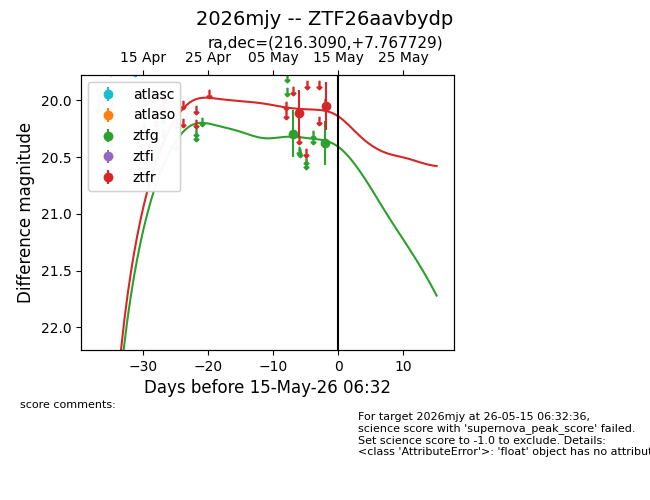
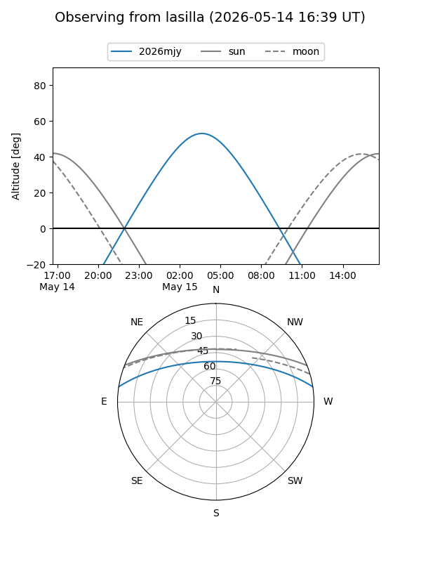
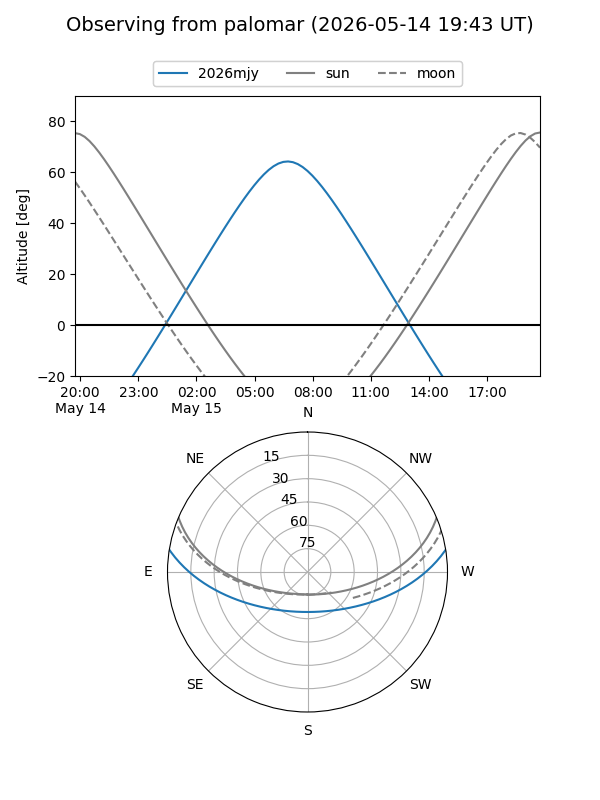
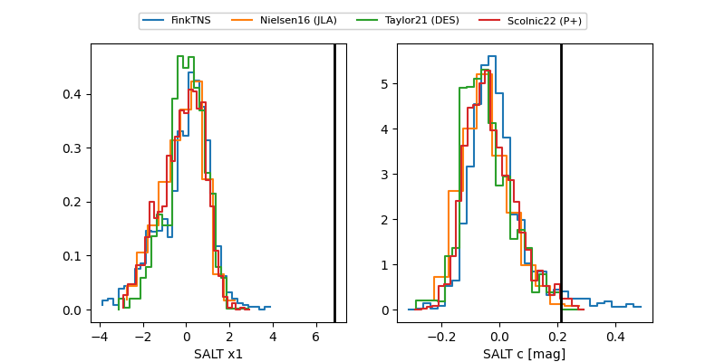

2026mjy
Target 2026mjy at 2026-05-15 06:34
Aliases and brokers:
FINK: link
Lasair: link
ALeRCE: link
TNS: link
YSE: link
alt names
ZTF26aavbydp (ztf,fink_ztf)
2026mjy (tns,yse)
Coordinates:
equatorial (ra, dec) = 216.3090,+7.76773
equatorial (HMS+DMS) = 14:25:14.15,+07:46:03.82
galactic (l, b) = (356.2036,+60.53109)
Flags:
Photometry:
last ztfg=20.38, ztfr=20.05
2 ztfg, 2 ztfr detections
Lightcurve

Visibility


Additional plots
